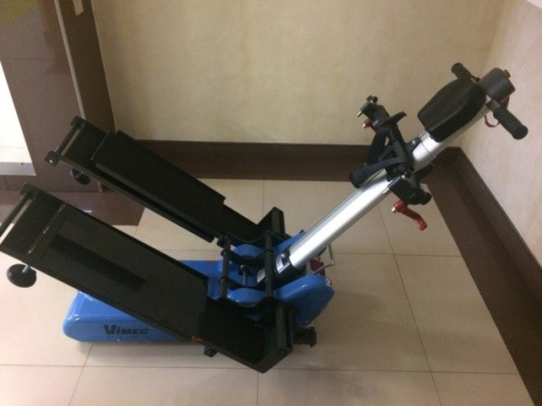
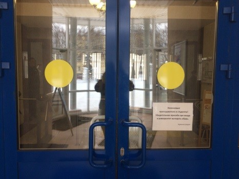
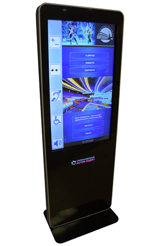
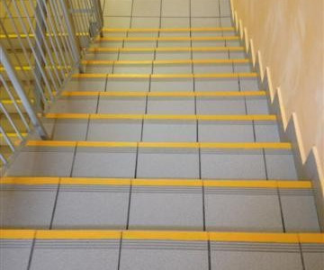
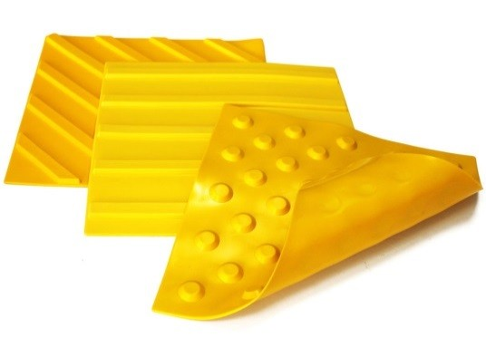

Лестничные подъемники
Мобильный лестничный подъемник обеспечивает возможность удобного подъема посетителей на их собственных инвалидных колясках по лестница и порогам. Устройство компактно, легко в эксплуатации, не требует обучения персонала. Устройством может управлять человек без особых физических данных. Инвалидная коляска быстро крепится к устройству на специальных крепежах. Устройство максимально безопасно – опирается на несколько ступеней, имеет встроенную защиту от наклонов, неожиданного разряда батареи.
Индикаторы безопасности «желтый круг»
Предназначены для предотвращения случайных столкновений с стеклянными дверями и перегородками, которые могут быть трудными для восприятия. Яркий цвет и четкая форма делают этот знак легко заметным. Индикатор безопасности в виде желтого круга является простым, но эффективным средством повышения безопасности.
Информационные терминалы
Информационный сенсорный терминал — это специализированное устройство, разработанное для обеспечения доступности информации и услуг для людей с ограниченными возможностями здоровья. Он оснащен интуитивно понятным сенсорным интерфейсом, который позволяет пользователям легко взаимодействовать с системой, получать необходимую информацию и использовать предлагаемые функции. Устройство создано с учетом принципов универсального дизайна, что обеспечивает его использование людьми с различными типами ограничений — как физическими, так и когнитивными.
Контрастные полосы на ступени
Контрастные полосы помогают людям, особенно с нарушениями зрения, легче распознавать границы ступеней. Яркие цвета создают четкий контраст с цветом самой ступени. Наличие таких полос значительно снижает риск падений и несчастных случаев на лестницах, так как они привлекают внимание и помогают пользователям лучше ориентироваться.
Тактильная рельефная напольная плитка
Пути движения слабовидящих и незрячих людей внутри и снаружи помещений оснащаются специальной тактильной плиткой, рисунок которой показывает либо направление движения (направляющие полосы), либо наличие препятствий на пути движения (специальные рельефные точки).